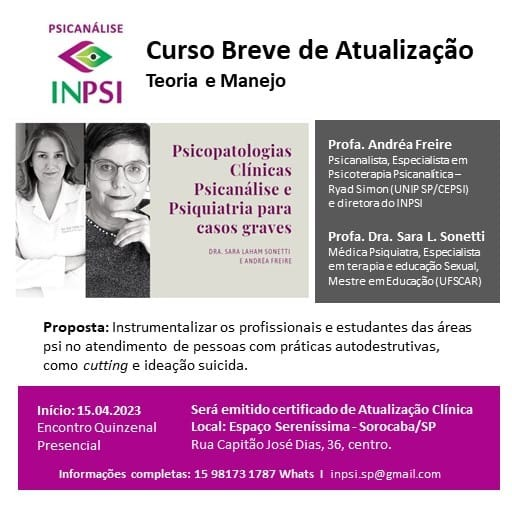
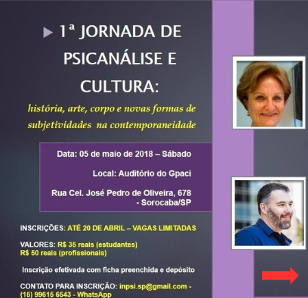
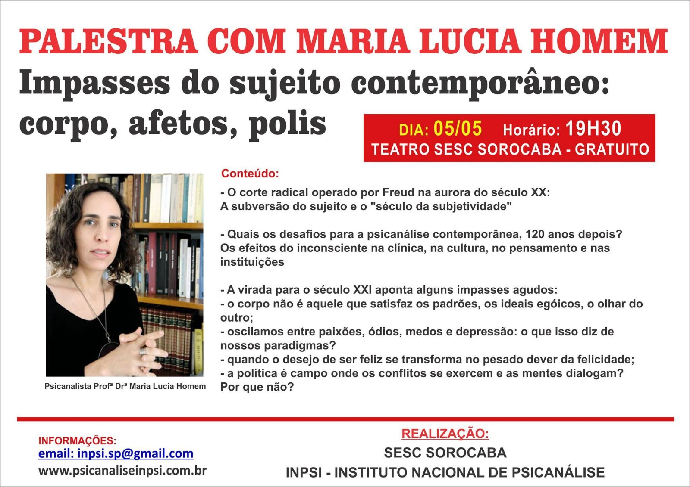
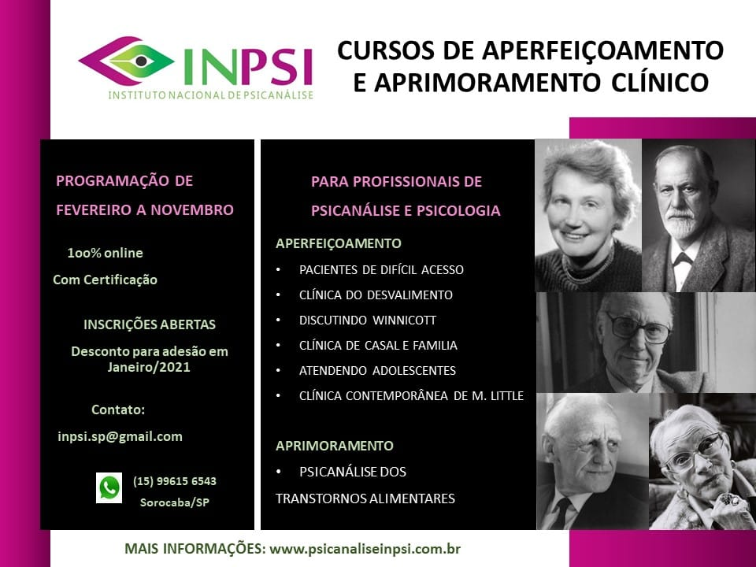
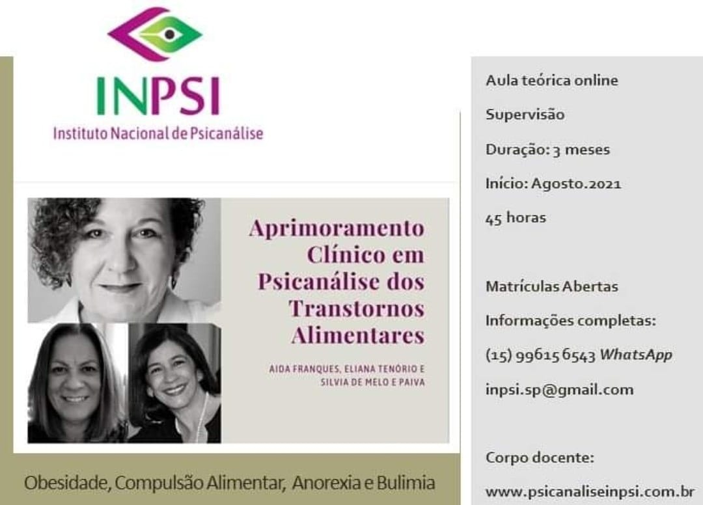
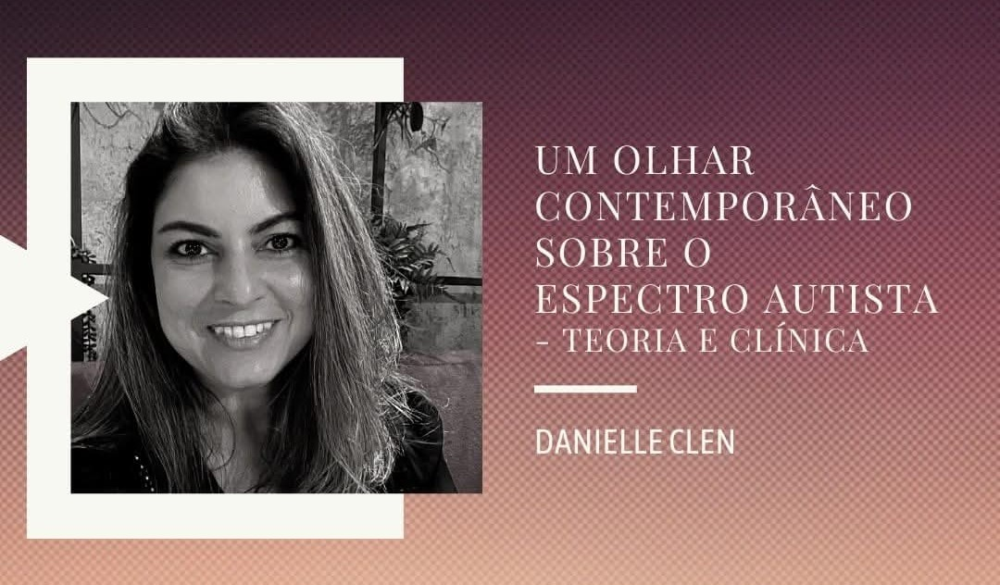
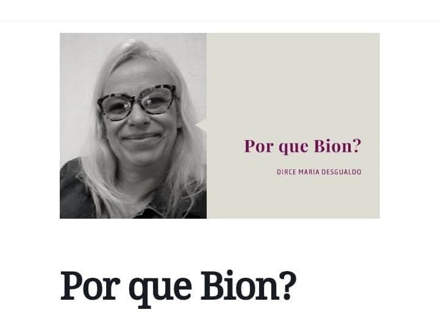
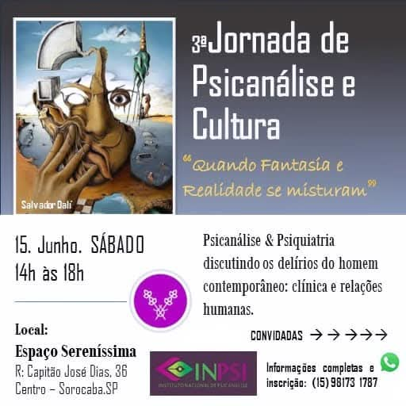
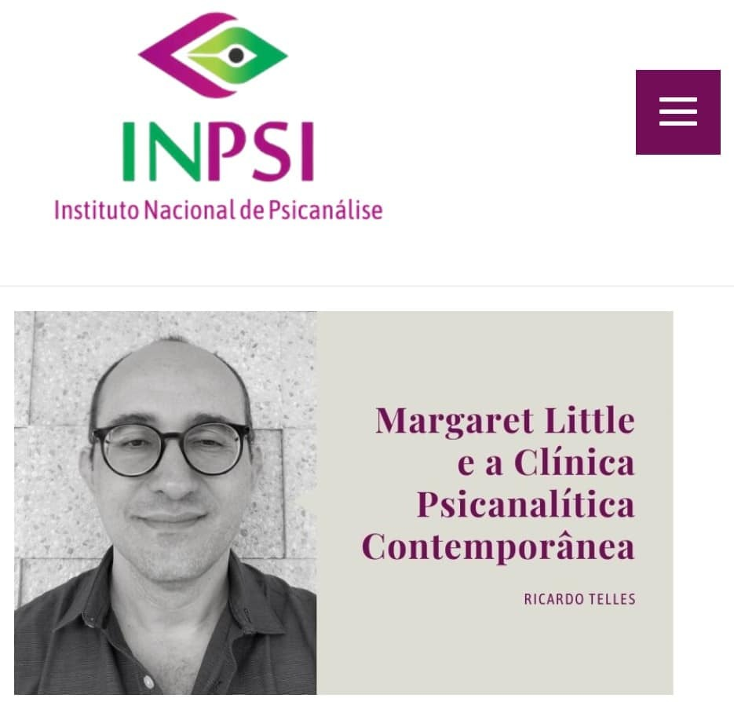
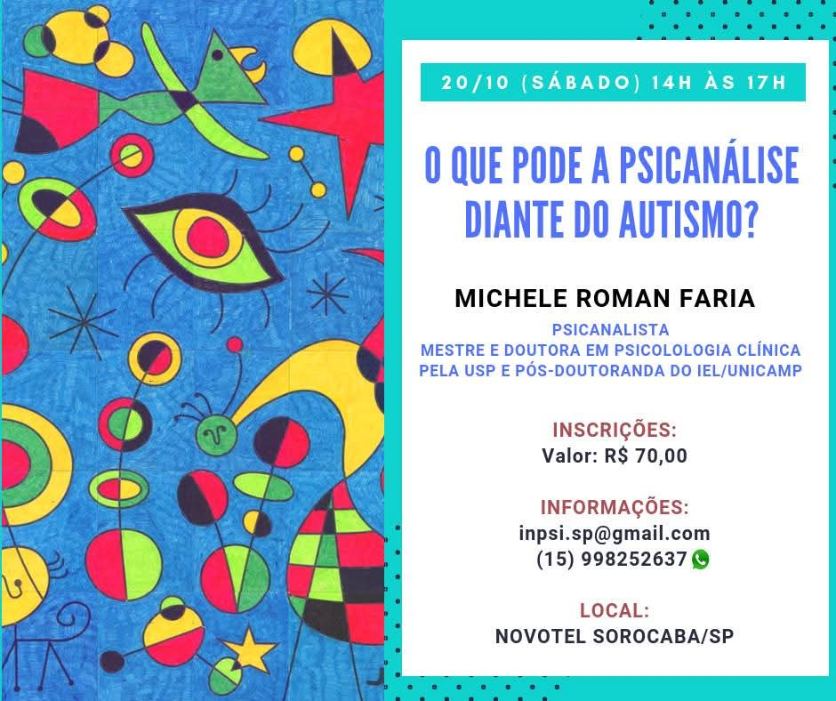

Histórico de Conhecimento
Eventos Realizados
Ao longo dos 13 anos do INPSI reunimos diversos profissionais além de nosso Corpo Docente — professores convidados que se tornaram parceiros e outros que igualmente ofereceram suas contribuições. São tantos para agradecermos!
Tivemos Jornadas, Simpósios, Cursos Breves e de Aperfeiçoamento, eventos voltados a oferecer estudos para a formação contínua dos profissionais. O INPSI sabe que a primeira formação para atendimento é apenas o início de uma trajetória de muito investimento sério no aprendizado, não apenas na prática, já que a Psicanálise possui uma grande gama de teóricos e conceitos para servirem de base diante dos atendimentos e desafios clínicos.
Por isso agora, o INPSI, após ter se consolidado com credibilidade um Instituto de formação em Psicanálise para atendimento, focará exclusivamente em atividades para os profissionais e estudantes de outras localidades, além de demais interessados.
Cobertura completa de nossos eventos no Facebook e Instagram
Alguns de Nossos Encontros










Acompanhe a cobertura completa de nossa história
Confira mais fotos, depoimentos e detalhes de cada um dos simpósios, jornadas e encontros que realizaram a história do INPSI em nossas redes sociais.